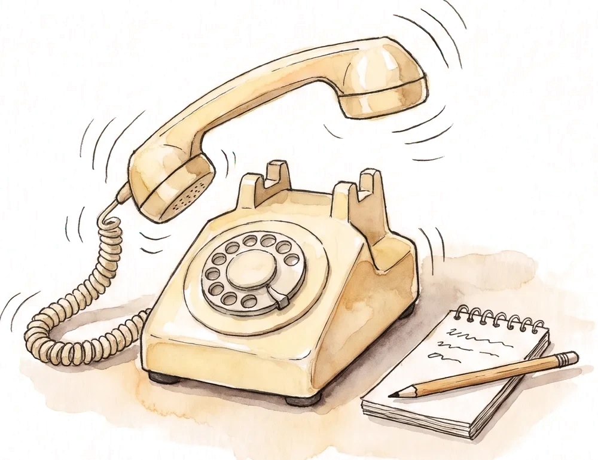
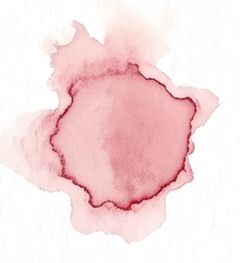

The nearest answers.
A dispatch system that splits your city into zones, one per free cab, so every call goes to the car closest to the door.
A phone
rings.
Stop 1 · The call
24 cabs are free.
The dispatcher has seconds to pick one.
The usual answer is a radio round: ask who is close, wait, guess. The wrong guess costs a cab driving empty across town and a caller watching the clock.

Stop 2 · Above the city
Every cab owns a patch of the city
Each zone holds the streets closer to its cab than to any other.
A call is answered by finding the zone it falls in, not by measuring the distance to every car.
Eleven cabs, eleven zones. The red pin is the caller.
From call to curb
The slow part is the drive. Everything before it takes seconds.
- 2 secondsThe call and the address are logged.
- InstantlyThe address lands in one zone.
- 5 secondsThat zone's driver accepts.
- 4 minutesThe cab takes the short way to the door.
Stop 3 · The garage
What exists today
A working prototype, built in Python in January 2026 and open to read.
Built: the zone map
24 cabs and 12 callers over a real city map.
Built: the search
One query finds the closest cab for every caller at once.

Next: a queue
So one cab never wins two calls. Later: live status, real roads, traffic.
End of the line
NearCabNearCab is a design study for a product that does not exist yet. Based on the Voronoi Taxi prototype, 2026.